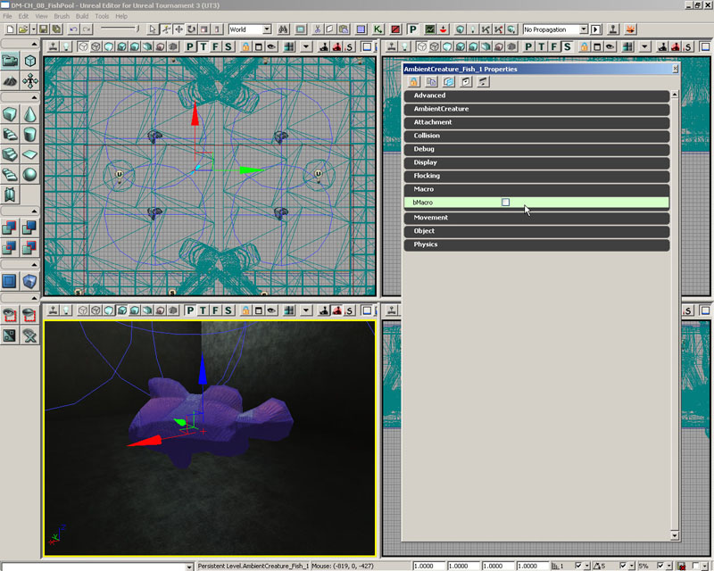
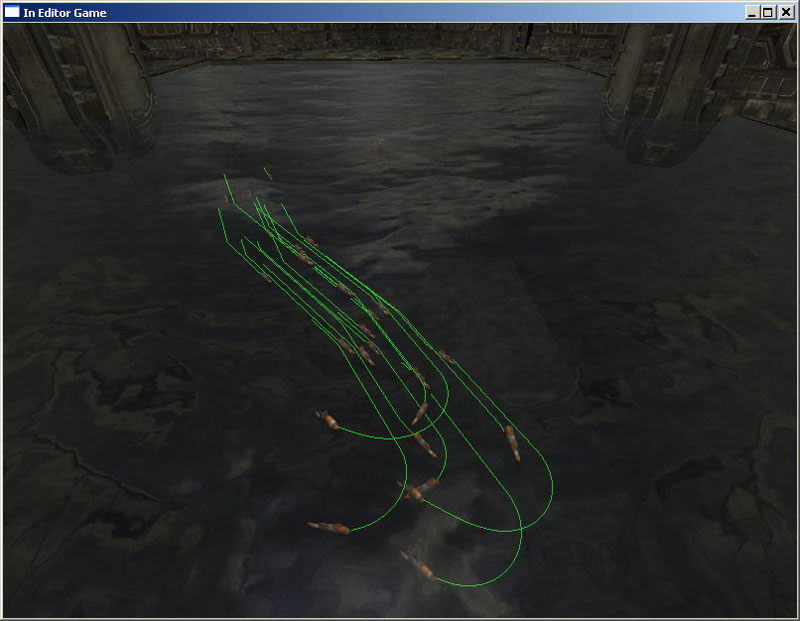
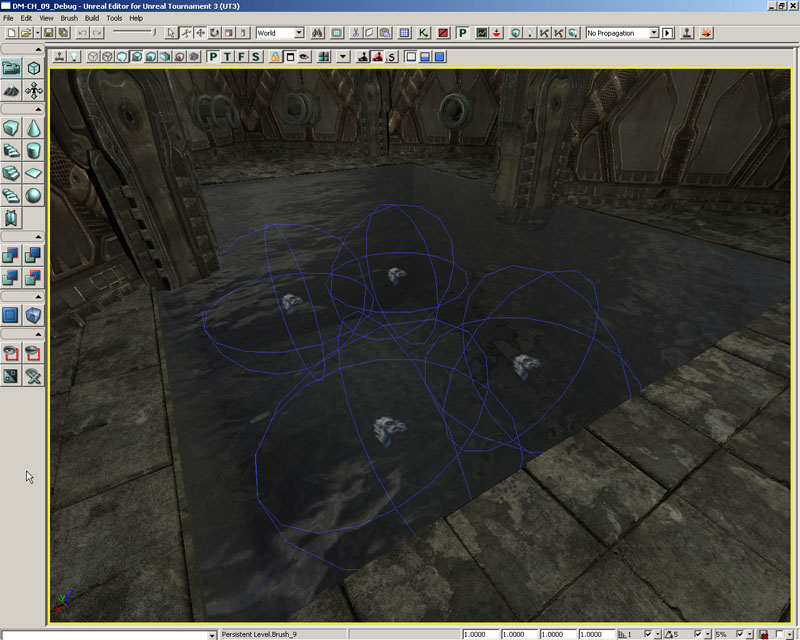
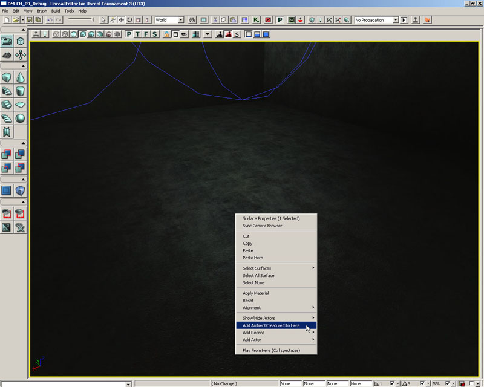

UDN
Search public documentation:
MasteringUnrealScriptPreProcessorJP
English Translation
中国翻译
한국어
Interested in the Unreal Engine?
Visit the Unreal Technology site.
Looking for jobs and company info?
Check out the Epic games site.
Questions about support via UDN?
Contact the UDN Staff
中国翻译
한국어
Interested in the Unreal Engine?
Visit the Unreal Technology site.
Looking for jobs and company info?
Check out the Epic games site.
Questions about support via UDN?
Contact the UDN Staff
- 第 9 章 – UNREALSCRIPT プリプロセッサ
- 9.1 概要
- 9.2 マクロの基本
- チュートリアル 9.1 – 最初のマクロ
- 9.3 パラメータ付きマクロ
- チュートリアル 9.2 – マクロパラメータ
- 9.4 組み込みマクロ
- チュートリアル 9.3 – インクルードファイルを使用する
- 9.5 コマンドラインスイッチ
- チュートリアル 9.4 – ビジュアルデバッグモード、パート I: INCLUDE ファイルの設定
- チュートリアル 9.5 – ビジュアルデバッグモード、パート II: 条件 INCLUDE 文
- チュートリアル 9.6 – ビジュアルデバッグモード、パート III: グローバル BSHOWDEBUG およびクリーチャー変数の初期化
- チュートリアル 9.7 - ビジュアルデバッグモード、パート IV: メッシュの秘匿
- チュートリアル 9.8 - ビジュアルデバッグモード、パート V: リーダーインジケータの描画
- チュートリアル 9.9 - ビジュアルデバッグモード、パート VI: 群れのビジュアルインジケータ
- チュートリアル 9.10 - ビジュアルデバッグモード、パート VII: テスト実施
- 9.5 サマリ
第 9 章 – UNREALSCRIPT プリプロセッサ
Unreal Engine 3 に新たに追加された機能の 1 つに UnrealScript プリプロセッサが有ります。 C++ のプリプロセッサに慣れているならば、 UnrealScript の新しいプリプロセッサは、とても快適でしょう。プリプロセッサがどのようなものかが分からない場合でも、心配はいりません。 手短かですが、ここでは細かいところまですべて説明していきます。9.1 概要
最も簡単な形式では、プリプロセッサはテキストを変更する見かけだけの変換ツールにすぎません。プリプロセッサは、マクロとして参照されたテキストを、ソースファイル内の他のテキストと置換するために使用されます。また、特定のコンパイラ命令を基にしたファイル内のある種のコードをインクルードするために使用されます ; これは、条件コンパイルとして知られ、複数プラットフォームで異なるコードを記述しなければならない時にはとても便利です。 スクリプトのコンパイルが実行される前にプリプロセッサが起動されることは、大事なので覚えておいてください。9.2 マクロの基本
スクリプト内でマクロを使用するためには、いくつかマクロを定義しなければなりませんが、それを行うため、組み込みマクロ定義を使用します。ビルトインマクロについては、近いうちにより詳細に説明しますが、マクロの基本的な定義はこのようになります :`define MyFirstMacro “This is really my first macro.”これを見てみると、マクロは ` (アクセント記号) で始まり、後ろにいくつかの空白 (タブ文字、空白文字、またはそれらの文字の任意の組み合わせ) がついていることが分かります。次はマクロの名前です。これは、後にスクリプト内で参照する時に使用します。マクロの名前には、空白を含んではならないことに留意してください。最後は、マクロ本体の定義となります。この本体の定義はオプションです。本体の無いマクロも定義できます。そのようなマクロは、特定の環境下での置換用途で使用されますが、プリプロセッサの If 文内で利用する時には非常に便利となる可能性があります。 注記 : マクロの本体の定義を除くことは、インクルードファイルのコンテキストに問題を発生させるかもしれません。これについては、本章のこれ以降にもっと詳しく説明します。 マクロを利用する時には、同じルールに従います。上で作成したマクロをソースファイル内で使用したい時には、以下のように入力します :
`MyFirstMacroこれは、 `MyFirstMacro を展開し、引用符も含め、“This is really my first macro.” と置き換えます。 他の方法として、以下のように書いてもマクロを展開できます :
`{MyFirstMacro}
うまい具合に配置された空白を含んでいない何らかのテキストの本体内でマクロを展開したい時に便利です。その他の時には、アクセント記号が簡単に見過ごされるため、スクリプト内でのマクロ提供を明確にするため、この形式を使用します。
some`{MyFirstMacro}code
プリプロセッサは、上のコードを次のように変更します :
some“This is really my first macro.”codeプリプロセッサが、マクロを展開した時、結果のマクロを展開すべきかどうかを確認するために展開済みのテキストを再スキャンします。これは、マクロ展開の無限再帰ループの結果となる可能性があるため、この機能の使用には細心の注意を払うべきです。以下の例に留意してください :
`define hello This macro will infinitely recurse because of the `hello usage. `hello
チュートリアル 9.1 – 最初のマクロ
本チュートリアルでは、マクロの基本的な置き換え動作を示すため、既存クラス内で使用される簡単なマクロを定義します。具体的に、マクロは、その本体に 1 つ以上のクラス指定子を含むクラス宣言より前に定義されます。このマクロは、その後、マクロ内で定義した指定子を宣言に追加するためにクラス宣言の中で使用されます。 1. ConTEXT および AmbientCreature.uc スクリプトをオープンしてください。 2. スクリプトの先頭にカーソルを置いて、クラスの全体の内容を何行か下に動かすため Enter キーを何回か押してください。 3. スクリプトの先頭行に戻って、 ClassSpecs という名前の新規マクロを定義してください。`define ClassSpecsClassSpecs という名前のマクロができましたが、この時点では本体を持ちません。 4. ClassSpecs の後に空白を置き、 Placeable クラス指定子を追加してください。その結果、最終的な定義内容は、以下のようになります :
`define ClassSpecs placeableここでは、マクロが使用された任意の場所に placeable という語が挿入されます。 5. クラス宣言の内部 Actor と言う語の後、 ; 終端子の前に、空白を追加してから、宣言に指定子を追加するために ClassSpecs マクロを配置してください。
class AmbientCreature extends Actor `{ClassSpecs};
中かっこは、マクロの周りで関係する空白の確認用に使われることに留意してください。さもなければ、以下のような宣言となってしまう可能性があります :
class AmbientCreature extends Actorplaceable;6. スクリプトをコンパイルしてから、 UnrealEd をオープンしてください。配置可能なクラスとして Actor Browser 内にリスト表示された AmbientCreature クラスを見るだけでなく、 AmbientCreature クラスから placeable 指定子を継承する AmbientCreature_Fish クラスの一覧も見るべきです。 UnrealEd をクローズしてください。

図 9.1 – AmbientCreature および AmbientCreature_Fish の双方のクラスが配置可能です。 7. ここで、 ClassSpecs マクロの定義の中で、 placeable 指定子の直ぐ前に abstract 指定子を追加してください。定義は以下のようになります :
`define ClassSpecs abstract placeable8. 再度スクリプトをコンパイルして、もう一度 UnrealEd をオープンしてください。 Actor Browser 中には、依然として、両方のクラスが表示されていますが、今回は、 AmbientCreature クラスは、 abstract として宣言されたために、配置可能なクラスで無いことを示すためにグレイアウトされているはずです。どのようなコードがマクロの本体の中に置かれたとしても、それは、クラス宣言のマクロの位置に挿入されることが分かるでしょう。

図 9.2 – AmbientCreature_Fish クラスだけが配置可能となりました。 9. 次のチュートリアルで使用するので、新しいマクロと共にファイルを保存してください。 <<<< チュートリアルの終了 >>>>
9.3 パラメータ付きマクロ
入力としてパレメータを受け取るマクロ定義を作成することも可能です。これは、基本的に、多くの点で関数と似ていますが、評価される代りに展開されます。これにより、ある種のマクロは、関数と同じことを行うと、より性能が向上する可能性があります。 形式的には、マクロの定義は以下のようになります :`define <macro_name>[(<param1>[,<param2>...])] [macro_definition]定義が恐ろしく見えるかもしれませんが、問題はありません。いくつか例を見ていきましょう。 例 : 数を三乗するマクロの作成 このマクロの定義は以下のようになります :
`define Cube(x) `x * `x * `xこれは、x という名前の 1 つのパラメータを受け取る Cube という名前のマクロを作成することを表します。展開式では、何が渡されても x で置き換えて x * x * x に展開します。パラメータの名前を参照する際には、 ` (アクセント記号) を前に付加しなければならないことに留意ください。 このマクロを使用する時は、このような感じになります :
var int myVal = `Cube(3);マクロの呼び出し時に、 ( (開きかっこ) を、マクロの名前のすぐ後ろに記述することは、とても重要です ; 空白を置いてはいけません。 例 : 2 つの数を加算して二乗するためのマクロ このマクロは 2 つの数を足してから、その結果を二乗します。
`define SumSquare(x, y) (`x + `y) * (`x + `y)このマクロの使用は、以下のように行います :
var int myVal = `SumSquare(5, 3);関数と同様に、パラメータを分けるために、カンマが使用されます。しかしながら、関数とは異なり、マクロのパラメータは完全に安全な型を提供しません。たとえば、もし、次のように記述すると、マクロがこうあるべきと考えるように展開を行います :
var int badValue = `SumSquare(p1, p2);展開は以下のように行われます :
var int badValue = (p1+ p2) * (p1+ p2);ここで、もし、 p1 および p2 が実際に integer の変数として定義されていれば、これは、予期した通りに動作するでしょう。しかしながら、プリプロセッサは、この型の有効性チェックを行いませんので、コンパイルすらできないコードとなる可能性もあります。 Unreal プリプロセッサは、マクロ評価の間の空白文字を省略する傾向にあるので、留意してください。もし、次のような出力を行いたい場合は (p1 の後ろの空白に留意) :
var int badValue = (p1 + p2) * (p1 + p2);以下のように定義時にマクロを {}(中かっこ) で囲む必要があります :
`define SumSquare(x, y) (`{x} + `{y}) * (`{x} + `{y})
この例の場合は、どちらでも構わないのですが、問題となる可能性のある部分ですので、このような事実があることはしっかりと覚えておいてください。
チュートリアル 9.2 – マクロパラメータ
本チュートリアルでは、前回のチュートリアルで得た知識をより広げてパラメータを使用する新規マクロを作成します。このマクロは、基本的には関数として動作し、新しい変数の宣言もできるようになります。 1. ConTEXT および前回のチュートリアルでの変更を含む AmbientCreature.uf スクリプトをオープンしてください。 2. ClassSpecs マクロの定義の下に、以下に示すパラメータを持つ NewEditVar という名前の新規マクロを定義してください :`define NewEditVar(varCat,varType,varName)3. ここで、マクロの本体を追加します。このマクロの目的は新たに編集可能な変数を宣言することですので、マクロ本体は、マクロのパラメータを使った変数宣言の形式を取ります。ここに見られるように本体を追加してください :
var(`varCat) `{varitype} `{varName}
マクロ定義の全体は以下のようになります :
`define NewEditVar(varCat,varType,varName) var(`varCat) `{varitype} `{varName}
ここでも、空白の整合性を保つために中かっこを使用しました。
4. これで、 AmbientCreature クラス中で、新規の編集可能な変数を宣言するために、このマクロが使用できます。クラス宣言の後で、以下のコードを追加して Macro カテゴリ内に置かれる bMacro という名前の新規 bool 変数を宣言してください :
`NewEditVar(Macro,Bool,bMacro)5. スクリプトをコンパイルして、 UnrealEd をオープンしてください。 AmbientCreature_Fish クラスは、前回のチュートリアルで行った変更に基づき未だ配置可能 (placeable) となっているはずです。 Actor Browser 内でこのクラスを選択し、ビューポート内で右クリックして、 Add AmbientCreature_Fish Here を選ぶことで、マップにこのクラスのインスタンスを追加してください。

図 9.3 – 新規 AmbientCreature_Fish アクタは、マップ内に配置されます。 6. プロパティウィンドウをオープンするために新規アクタをダブルクリックしてください。 Macro カテゴリが存在するはずです。このカテゴリを展開すれば、 bMacro プロパティがリスト表示されているはずです。このマクロは、新規変数を宣言するために適切なコードを挿入するために使用されました。

図 9.4 – bMacro プロパティはマクロを使って追加されました。 この場合、マクロコードは、手作業で宣言を入力するより格段に効率的というわけではありませんが、 mod の開発時には、このような形のマクロの利用によって、繰り返し作業の実施が非常に効率化されるような状況になるかもしれません。 7. 未使用の新規マクロおよび変数の宣言と共にファイルを保存してください。これらは、次のチュートリアルで使用されます。 <<<< チュートリアルの終了 >>>>
9.4 組み込みマクロ
UnrealScript プリプロセッサは、既に定義されているいくつかの組み込みマクロを持ちます。この説明では、それらのマクロを取り上げ、その使い方の例を提示します。DEFINE
このマクロは、使用したい他のマクロを定義するために使用されます。命名されたマクロは、与えられた定義に従って展開されるでしょう ; もし、何も定義が提供されていなければ、空の文字列に展開されます。 定義の形式は以下のとおりです :`define <macro_name>[(<param1>[,<param2>...])] [macro_definition]パラメータと共に命名されたマクロを使用する時は、 ( (開きかっこ) をマクロの名前の直後に指定しなければならず、マクロとそのすべてのパラメータは、型付けされずに、カンマで分けられたリストで指定されることを思い起こしてください。 define に対しては、特殊なマクロがあります : `# です。このマクロは、指定されたパラメータの数を表し、マクロの定義の内部でのみ使用可能です。 例えば :
`define MyMacro(p1, p2, p3, p4) “This macro contains `# parameters.” var string myString = `MyMacro(1, 2, 3, 4);上の MyMacro の利用を展開すると以下のようになります :
var string myString = “This macro contains 4 parameters.”;
IF/ELSE/ENDIF
if、 else および endif マクロは条件コンパイルをサポートするために使用されます ; それらは、コンパイル時に、あるコードのブロックを対象にしたり、対象外にしたりします。これは、特定のプラットフォームに対して固有の実装を提供する必要がある際にとても有用です。 定義の形式は以下の通りです :`if(<value>) `else `endifもし空白以外の文字列に展開されたら、 if-文中の値は true と評価されますが、そうでなければ、 false とみなされます。この値が true と評価された時には、 if および else マクロの間のテキストのすべてが、ファイル内に置かれます。そうでなければ、 else および endif マクロの間のテキストが使用されます。 else マクロは、この構造では省略可能な部分であることは、知っておくと良いでしょう ; すなわち、 if および endif マクロだけで作られたブロックも有効となります。
例 : IF/ELSE/ENDIF の使用法
この例では、マクロを定義して、マクロが空白文字列として評価されるか否かに基づきコードのブロックをインクルードします。`define MyIfCheck “Yes” var int myValue; `if(`MyIfCheck) myValue = 10; `else myValue = 20; `endifもちろん、この例は、もしも MyIfCheck が常に “Yes” と評価されなかった場合は、もっと便利になるでしょうが、その方法は、後ほどコマンドラインオプションで学習しましょう。 例 : IF/ELSE/ENDIF マクロの入れ子 1 つ以上の状態をチェック可能にしたい場合が時々あります。これを行うために 2 種類の方法が有ります ; どちらがお好みかは自分で決めてください。 2 つの方式では非空白文字列 (PC、 XBOX360 または PS3) に対して以下のマクロのうちの一つを定義するとします。 方式 1:
`if(`PC) // PC に対して実行されるコードはここです `else `if(`XBOX360) // Xbox 360 に対して実行されるコードはここです `else `if(`PS3) // PS3 に対して実行されるコードはここです `endif方式 2:
`if(`PC) // PC に対して実行されるコードはここです `endif `if(`XBOX360) // Xbox 360 に対して実行されるコードはここです `endif `if(`PS3) // PS3 に対して実行されるコードはここです `endif上で使用されたどちらの方式でも、実行するプラットフォームに依存して特定のコードのブロックのみの実行を確実にしますが、一方は、他方より少しだけ簡潔になっています。
INCLUDE
include マクロは現在の場所に他のファイルの内容をインクルードするために使用されます。 include マクロはこのようになります :`include(<filename>)デフォルトでは、ファイル名は、ゲームの INI ファイルの Editor.EditorEngine セクション内に設定された EditPackagesInPath で指定されたディレクトリからの相対パスとみなされます。ファイル名がディレクトリパスを含まない時は、コンパイラは、まず UTGame/Src ディレクトリをファイル検索してから、現在コンパイルしているパッケージに対する基底ディレクトリ内を探します。 インクルードファイルは、通常の .uc UnrealScript ファイルが含むことができる任意のコードを格納できます。ファイル内のコードは、それをインクルードする任意のスクリプト内に挿入されます。任意のファイルタイプが指定可能ですが、(UC Include を意味する) .uci がかなり一般的に使用されています。このファイルタイプは、本書を通じてすべてのインクルードファイルについて使用されます。 注意しなければならない重要な問題の 1 つは、インクルードファイル内部で本体の無いマクロを定義すると、特にもし、この定義がファイルの最終行であった場合に、コンパイルエラーを引き起こす可能性があることです。単なるコメントでも良いので、そのような定義の後ろに何らかのコードを記述して、この問題を解消するべきです。
ISDEFINED/NOTDEFINED
isdefined マクロは、指定されたマクロが定義されていることを確認するために使用されます ; マクロが定義されていた場合は、このマクロは "1" と評価します。 isdefined マクロはこのようになります :`isdefined(<macro_name>)notdefined マクロは isdefined マクロと同様ですが、指定されたマクロが定義されていないことを確認するために使用されます ; もしマクロが定義されていなかった場合には、このマクロは "1" と評価します。 notdefined マクロはこのようになります :
`notdefined(<macro_name>)これら双方のマクロは、主に条件コンパイルのコンテキストで使用されます。
例 : IF/ELSE/ENDIF および ISDEFINED/NOTDEFINED の組み合わせ
プラットフォーム固有のマクロ定義を確認する直前の例では、マクロは常に何らかの空白で無い文字列に評価されるようにみなされました。しかしながら、実際は常にそうではありませんので、これらの条件を確認するためには、より確かな方法が望ましいです。ここでは、 isdefined および notdefined マクロが本当に有用に見えます。`define MyCode `if(`isdefined(MyCode)) // MyCode が定義されているため、このブロックはインクルードされます `endif `if(`notdefined(MyCodeNotDefined)) // MyCodeNotDefined が定義されていないため、このブロックもインクルードされます `endif上の例は、以前の if/else/endif マクロの例に良く似ているように見えるかもしれませんが、 if マクロは、空白で無い文字列に対して true の評価を行うだけだったことを思い出してください。もし、上の例の MyCode が空白文字列に対して評価されて、また、 isdefined マクロも使用しなかったならば、 if マクロは false と評価されて、ブロックはインクルードされないでしょう。
UNDEFINE
undefine マクロは、指定された名前のマクロの現在の定義を削除するために使用されます。このようになります :`undefine(<macro_name>)`# のようなパラメータ名の定義の削除はできませんので、重要な点として留意ください。
LOG/WARN
log および warn マクロは、どちらも Object.uc 内で宣言された LogInternal および WarnInternal 関数に対するラッパーで、スクリプトのデバッグにはとても有用です。マクロの定義は以下の通りです。`log(string OutputString, optional bool bRequiredCondition, optional name LogTag); `warn(string OutputString, optional bool bRequiredCondition);bRequiredCondition が指定されていたら、条件は、メッセージをログ出力するか否かを決定するためのスクリプトの実行中に評価されます。 スクリプトが、 –final_release スイッチ付きでコンパイルされた場合は、これらのマクロはどちらも無効となります。
LOGD
logd マクロは、 log マクロと全く同じですが、スクリプトがデバッグモードでコンパイルされる時だけ評価されます。`logd(string OutputString, optional bool bRequiredCondition, optional name LogTag);本マクロは、スクリプトが –final_release スイッチ付きでコンパイルされた場合は無効となります。
ASSERT
本マクロは、 Assert 組込み式に対するラッパーです。これは、特にデバッグ時に、特定の条件に合致したかをアサート、または評価するために使用されます。 アサートマクロは以下のように定義されます :`assert(bool bCondition);本マクロは、スクリプトが –final_release スイッチと共にコンパイルされた時には無効となることに留意ください。
例 : 条件の評価
この例は、 2 つの数を加算して、合計のアサート確認を実行します。var int x = 1; var int y = 4; var int sum = x + y; `assert(sum == 4);
チュートリアル 9.3 – インクルードファイルを使用する
本チュートリアルでは、インクルードファイルの使用法を紹介します。前回のチュートリアル内で定義された NewEditVar マクロは、別ファイルに移動され、 include マクロの使用を通して AmbientCreature クラスで利用可能となります。 1. ConTEXT と同様に AmbientCreature.uc ファイルをオープンしてください。 2. 新規ファイルを作成して、希望に応じて、 UnrealScript ハイライタを設定してください。 3. AmbientCreature.uc ファイル内の NewEditVar マクロ定義を選択して、 Ctrl+X を押して切り取りを行ってください。新規ファイル内にマクロ定義を貼り付けるため、ここで Ctrl+V を押してください。 4. この時点で AmbientCreature.uc ファイルを保存して、スクリプトをコンパイルしたら、 NewEditVar マクロが依然として使用されていますが、スクリプト内では定義されていないため、エラーとなるでしょう。実際に試みて、自分で確認してみてください。コンパイラは、マクロが存在しないというエラーを出力するはずです。 5. File メニューから Save As を選択して、マクロ定義を共に含む新規ファイルを保存してください。 1 つ上のディレクトリ MasteringUnrealScript フォルダに移動して、ファイル名として AmbientCreature_Debug.uci を入力してください。 ConTEXT は、 UnrealScript ハイライタの使用に基づき .uc ファイルタイプで保存を行おうとするため、ファイルタイプはマニュアルで入力しなければなりません。 6. ここで、 AmbientCreature.uc ファイル内で NewEditVar マクロを定義した場所に、新規ファイルをインクルードするため、このスクリプト内に以下の文を追加してください。`include(AmbientCreature_Debug.uci)7. AmbientCreature.uc ファイルを保存して、再度スクリプトをコンパイルしてください。今回は、マクロに関するエラーは無いはずです。 8. UnrealEd をオープンして、マップ内に AmbientCreature_Fish アクタを配置してください。そのプロパティをオープンし、 Macro カテゴリおよび bMacro プロパティの双方が存在することを確認するためにチェックしてください。 AmbientCreature_Debug.uci ファイルからのコードは、 include 文を使用して AmbientCreature.uc ファイル内に正しく挿入されます。この場合は、インクルードされたファイル内には、プリプロセッサ文のみをインクルードしましたが、任意の UnrealScript コードがこのファイルの中には配置可能であり、他の任意のファイル内にインクルード可能です。これは、お互いに継承を行うようなぜいたくを許されていないいくつかのクラス内で使用するために必要な関数を持つ場合には、非常に便利です。一度、関数を記述すれば、それを含むファイルをインクルードするだけでどこでも使用することができます。

図 9.5 – AmbientCreature_Fish アクタは、マップ内に配置されています。 9. そのプロパティをオープンして、まだ、 Macro カテゴリと bMacro プロパティの双方が存在していることを確認してください。

図 9.6 – bMacro プロパティは依然として Property ウィンドウ内に表示されています。 AmbientCreature_Debug.uci ファイルからのコードは、 include 文を使用して AmbientCreature.uc ファイルに正しく挿入されます。この場合は、インクルードされたファイル内には、プリプロセッサ文のみをインクルードしましたが、任意の UnrealScript コードがこのファイルの中には配置可能であり、他の任意のファイル内にインクルード可能です。これは、お互いに継承を行うようなぜいたくを許されていないいくつかのクラス内で使用するために必要な関数を持つ場合には、非常に便利です。一度、関数を記述すれば、それを含むファイルをインクルードするだけでどこでも使用することができます。 10. 次に進む前に、デモの目的で AmbientCreature クラスに加えられた追加は、もはや必要ないので削除しましょう。これらの追加は以下を含みます :
- ClassSpecs マクロの定義
- クラス宣言内の ClassSpecs マクロの利用
- AmbientCreature.uci ファイルに対するインクルード
- bMacro 変数を宣言するための NewEditVar マクロの利用
9.5 コマンドラインスイッチ
スクリプトをコンパイルする時に、コマンドラインスイッチが指定可能です。これらのスイッチは、プリプロセッサの動作方法を変更するために使用されます。DEBUG
このスイッチでスクリプトがコンパイルされた時には、デバッグマクロが定義されます。これは、スクリプト内の、デバッグ情報のような、特定の機能をインクルードしたい時には、特に便利ですが。開発のテストステージを通じてのみ必要です。 使用法 : ut3.exe make –debugFINAL_RELEASE
本スイッチは、スクリプトが最終リリースとしてコンパイルされることを知らせるためのものです。これは、 final_release マクロを定義して、 (log, logd, warn, assert などの) ラッパーマクロを利用不可にします。 使用法 : ut3.exe make –final_releaseNOPREPROCESS
これは、すべてのマクロおよびコメントのプリプロセス処理を無効にします ; すなわち、スクリプトのコンパイル中にマクロは評価されません。これは、とても便利なコマンドラインスイッチというわけではありませんが、マクロを誘導する文字 (アクセント記号) を使用するファイルがあれば、このコマンドラインスイッチを使用できるかもしれません。 使用法 : ut3.exe make –nopreprocessINTERMEDIATE
このスイッチは、中間的なプリプロセス済みファイルを提供するために使用されます。これは、原因をたどるのが難しいプリプロセッサの問題を追跡する際にとても有用です。時間がかかり、余分なディスク空間も使用しますが、場合によっては、価値が有る可能性が有ります。 これらのファイルは、ここに格納されます : ..\UTGame\PreProcessedFiles\チュートリアル 9.4 – ビジュアルデバッグモード、パート I: INCLUDE ファイルの設定
この一連のチュートリアルを通して、 -debug スイッチが使用される時だけに、スクリプト中にコンパイルされるアンビエントクリーチャーに対するビジュアルデバッグシステムを作成します。このシステムは、クリーチャーの動作と同じく、個々のクリーチャーの位置を示すボックスのような他のビジュアルインジケータを示す経路を描く能力を提供します。このような種類のフィードバックは、新規クラスを設計する時には、とても有用となる可能性がありますが、アクタをマップ内に設定した時には、デザイナーにとっては、それほど有用ではありません。このような事実に加えて、使用されるメソッドはひどく性能を損うので、スクリプトコンパイル時の -debug スイッチ使用を、この条件として選択している理由は納得できるかもしれません。プログラマとしては、 -debug モードでのコンパイルによって即座に明快なフィードバックを得る能力を持ち、同時に、デザイナーがセットアップ処理を可能な限り簡単に整理できるように不必要なものはコンパイル対象から外すことができます。 この第 1 のチュートリアルでは、 AmbientCreature および AmbientCreatureInfo クラスの双方で使用される新たな構造体の宣言を含むインクルードファイルの設定に焦点を当てましょう。 AmbientCreatureInfo クラスでは、各々の CreatureInfo がこの構造体の自分自身のインスタンスを持ちますので、ビジュアルフィードバックも個別に設定できます。 AmbientCreature クラスは、 AmbientCreatureInfo から渡されたプロパティを保持するために構造体のインスタンスを持ちます。 1. ConTEXT および AmbientCreature_Debug.uci ファイルをオープンしてください。 2. AmbienCreature_Debug.uci ファイルは、現在は NewEditVar マクロの定義を含んでいます。ファイル内のこの定義をそのままにして置いても全く問題ありませんが、自分のやり方と異なる場合に、削除するのは自由です。それは、この章ではもう使用されません。 以下の行をスクリプトに追加して、 DebuggingInfo という名前の新規構造体の宣言を設定することから始めましょう :
struct DebuggingInfo
{
};
3. 構造体を宣言するために、この構造体にどのような変数が含まれるかを知る必要があります。大部分は、構造体内の変数は Bool 変数で、特定のビジュアルインジケータを描画するかどうかを決定します。これらの変数は以下の通りです :
- bShowDebug – すべてのビジュアルインジケータに対するグローバルトグル
- bShowFollowPaths – 群れのクリーチャーの経路の描画についてのトグル

図 9.7 – 群れのおのおののクリーチャーの経路が描画されます。
- bShowLeaderPaths – 群れをリードするクリーチャーの経路の描画をトグル

図 9.8 – 群れを率いるクリーチャーの経路が描画されます。
- bShowFlockPaths – 群れの中のクリーチャーからリーダーへのリンクを描画するためのトグル

図 9.9 – 群れの中の個々のクリーチャーからリーダーへの経路が描画されます。
- bShowFlockBoxes – 群れの中のクリーチャーの場所にボックスを描画するためのトグル

図 9.10 – 群れの中の個々のクリーチャーの位置にボックスが描画されます。
- bShowLeaderBoxes - 群れを率いるクリーチャーの位置にボックスを描画するためのトグル

図 9.11 – もしそれがクリーチャーであったなら、リーダーの位置にボックスが描かれます。
- bShowMesh – クリーチャーのビジビリティのためのトグル

図 9.12 – 左側では、 bShowMesh は True で、右側では False です。 ここでは、単に、以下に示すような構造体定義の中で、これらの変数それぞれに対して宣言を追加することができるだけです。これらの個々の変数は、編集可能として宣言すべきことに留意ください。
var() Bool bShowDebug; var() Bool bShowFollowPaths; var() Bool bShowFlockPaths; var() Bool bShowLeaderPaths; var() Bool bShowFlockBoxes; var() Bool bShowLeaderBoxes; var() Bool bShowMesh;4. 次に進む前に、さらに必要な変数が、 2 つ有ります。群れの中のクリーチャーは、リーダーのパスを定義する一連の位置情報を保存します。クリーチャーが向かっている現在の位置への経路のみの描画を選択するか、または、その位置のすべてを使用した経路を描画できます。しかしながら、もっと柔軟な解決策は、経路を描画する際に、エディタの内部のプロパティを使って、使用する経路の長さと、位置の数を許可することでしょう。 FollowPathSegments と名付けた Int 変数が、この値を決めるために使用されます。ここで、この変数に対する宣言を追加してください。
var() Int FollowPathSegments;

図 9.13 – FollowPathSegments プロパティにより、様々な値で経路が描画されます。 5. これらのパスを描画する時も同様に色を指定しなければなりません。同時に、 1 つのシーン内に複数の群れを持つことが可能ですので、経路のすべてを同じ色で描いたとしたら、どれほど混乱するかは想像できるでしょう。それぞれのクリーチャーの群れで、その群れに属するクリーチャーの経路毎に個別にカスタム設定色を持つことができるように FollowPathColor という名前の Color 変数を追加できます。
var() Color FollowPathColor;6. 構造体定義の最後の部分では、宣言を行った最後の 2 つの変数に対するデフォルト値を設定します。 FollowPathSegments プロパティに対しては 6 の初期値が良いでしょう。また、デフォルトのティール色を使用して経路を描画します。以下のようなデフォルト値を指定して structdefaultproperties ブロックを追加してください :
structdefaultproperties
{
FollowPathSegments=6
FollowPathColor=(R=0,G=255,B=255)
}
7. AmbientCreature_Debug.uci ファイルを保存してください。
<<<< チュートリアルの終了 >>>>
チュートリアル 9.5 – ビジュアルデバッグモード、パート II: 条件 INCLUDE 文
本チュートリアルでは、前回のチュートリアルで設定したファイルが、コンパイル時に -debug スイッチが使用されたかどうかに基づき AmbientCreature および AmbientCreatureInfo クラス内にインクルードされます。また、個々のクラスでは、 DebuggingInfo 構造体のインスタンスも宣言します。 1. ConTEXT と同じく、 AmbientCreature.uc および AmbientCreatureInfo.uc ファイルをオープンしてください。 2. クラス宣言の後の AmbientCreature クラスにおいて、基本的にクラス内で DebuggingInfo 構造体を宣言する AmbientCreature_Debug.uci ファイルをインクルード可能です。始めに、コンパイル処理中に -debug スイッチが使用された時にのみインクルードが行われることを確認する必要があります。本章でこれまで学んできたように、 -debug スイッチが使用された時は、デバッグマクロが定義されます。デバッグマクロが定義されていることを確認するために `isdefined マクロと共に `if マクロを使用可能ですので、 if 文の内部に include 文を配置します。 以下のように –debug スイッチを確認するための `if 文を設定してください :`if(`isdefined(debug)) `endifここで、 `if 行の後ろ、 `endif 行の前に、 include 文を記述してください :
`include(AmbientCreature_Debug.uci)コードの最終セクションは、以下のようになります :
`if(`isdefined(debug)) `include(AmbientCreature_Debug.uci)`endif 3. DebugInfo と名付けた DebuggingInfo 構造体のインスタンスも宣言する必要があります。これも条件ですので、同じ `if 文の内部に宣言を行うことができます。ここで、宣言を追加してください。
var DebuggingInfo DebugInfo;ここで `if 文は以下のようになります :
`if(`isdefined(debug)) `include(AmbientCreature_Debug.uci) var DebuggingInfo DebugInfo; `endif4. Ctrl+C を押して、このブロックのコードをコピーしてください。 5. AmbientCreatureInfo クラス内のクラス宣言の後に、 Ctrl+V を押して、このブロックのコードを貼り付けてください。 6. AmbientCreatureInfo クラス内の DebuggerInfo のインスタンスが、 CreatureInfo 構造体の内部に置かれる事は、以前に述べましたが、その結果として、クリーチャーの個々のグループはそれ自身のインスタンスを持ちます。 DebugInfo 変数の宣言を選択して、 Ctrl+X を押して切り取りを行ってください。 7. CreatureInfo 構造体の定義の中の最後の変数宣言 (おそらく FlockInfo) の後ろに、 DebugInfo 宣言を貼り付け、include 文に対して使用されたのと同じように `if 文で囲んでください。 この DebugInfo 変数も確実に編集可能にしてください。新しいコードのブロックは以下のようになります :
`if(`isdefined(debug)) var() DebuggingInfo DebugInfo; `endifCreatureInfo は、以下のようなものになります :
struct CreatureInfo
{
var array<AmbientCreature> MyCreatures;
var() class<AmbientCreature> CreatureClass;
var() array<AmbientCreatureNode> CreatureNodes;
var() Int NumCreatures;
var() Float MinTravelTime,MaxTravelTime;
var() Float Speed;
var() DisplayInfo DisplayInfo;
var() FlockInfo FlockInfo;
`if(`isdefined(debug))
var() DebuggingInfo DebugInfo;
`endif
structdefaultproperties
{
MinTravelTime=0.25
MaxTravelTime=4.0
Speed=70
NumCreatures=1
}
};
8. 両方のファイルを保存してください。新規コードが適切に動作するかどうかを確認するために、スクリプトをコンパイルする必要があります。しかし、結果をより簡単に見るために、コンパイル時に、明らかに必要な –debug スイッチに加え、 –intermediate スイッチの利用が可能です。 これらのスイッチを使用するために、スイッチの設定を許可するコンパイル方式を使用しなければなりません。これらの方式は以下のようなものを含みます :
- コマンドラインを使用する
- カスタム Target でショートカットを使用する
- ConTEXT 内で Exec キーを設定する
C:\Program Files\Unreal Tournament 3\Binaries> UT3.exe make –debug -intermediate9. スクリプトのコンパイルが終わったら、 ..\My Games\Unreal Tournament 3\UTGame ディレクトリ内に存在する PreProcessedFiles ディレクトリに移動してください。このフォルダの中に、スクリプトの中間バージョンがあります。 AmbientCreature.UC および AmbientCreatureInfo.UC ファイルをオープンしてください。 DebuggingInfo 構造体定義および DebugInfo 変数宣言は、予期したように動作するプロセスを示すためにスクリプト内に見られるはずです。 10. 単に確認のために、今回は、 –debug スイッチ無しで、もう一度スクリプトをコンパイルしてください。中間ファイルをもう一度オープンして、 DebuggingInfo 定義および DebugInfo 宣言が今度は存在しないことに留意してください。 <<<< チュートリアルの終了 >>>>
チュートリアル 9.6 – ビジュアルデバッグモード、パート III: グローバル BSHOWDEBUG およびクリーチャー変数の初期化
1. ConTEXT および AmbientCreatureInfo.uc ファイルをオープンしてください。 2. MyCreatureInfos 配列が宣言されている行を検索してください。この行の直前に、 MyCreatureInfos 配列内のすべての CreatureInfos に対するビジュアルインジケータすべてに対するグローバルトグルとして作用する bShowDebug という名前の Bool 変数を宣言します。以前のように、これは、 -debug スイッチが使用されたかどうかの条件に依存します。以下のように変数を宣言してください :`if(`isdefined(debug)) var() Bool bShowDebug; `endif3. ここで、 CreatureInfo 内に設定された値に基づきクリーチャーの変数の値の初期化を開始できます。 FollowType スイッチ文の後に、このコードを -debugswitch が使用された条件で生成するために `if 文を設定してください。
`if(`isdefined(debug)) `endif4. 変数の初期化は、グローバル bShowDebug 変数が true に設定されている場合にのみ行われます。この変数の値を確認しているプリプロセッサの `if 文の中に If 文を作成してください。
if(bShowDebug)
{
}
5. この If 文の中では、以下に示すようなクリーチャーの変数の値を設定してください。
MyCreatureInfos[i].MyCreatures[j].DebugInfo.bShowDebug=MyCreatureInfos[i].DebugInfo.bShowDebug; MyCreatureInfos[i].MyCreatures[j].DebugInfo.bShowFollowPaths=MyCreatureInfos[i].DebugInfo.bShowFollowPaths; MyCreatureInfos[i].MyCreatures[j].DebugInfo.bShowFlockPaths=MyCreatureInfos[i].DebugInfo.bShowFlockPaths; MyCreatureInfos[i].MyCreatures[j].DebugInfo.bShowLeaderPaths=MyCreatureInfos[i].DebugInfo.bShowLeaderPaths; MyCreatureInfos[i].MyCreatures[j].DebugInfo.bShowFlockBoxes=MyCreatureInfos[i].DebugInfo.bShowFlockBoxes; MyCreatureInfos[i].MyCreatures[j].DebugInfo.bShowLeaderPaths=MyCreatureInfos[i].DebugInfo.bShowLeaderPaths; MyCreatureInfos[i].MyCreatures[j].DebugInfo.bShowMesh=MyCreatureInfos[i].DebugInfo.bShowMesh; MyCreatureInfos[i].MyCreatures[j].DebugInfo.FollowPathSegments=MyCreatureInfos[i].DebugInfo.FollowPathSegments;; MyCreatureInfos[i].MyCreatures[j].DebugInfo.FollowPathColor=MyCreatureInfos[i].DebugInfo.FollowPathColor;完成したコードのブロックは以下のようになります :
`if(`isdefined(debug))
if(bShowDebug)
{
MyCreatureInfos[i].MyCreatures[j].DebugInfo.bShowDebug=MyCreatureInfos[i].DebugInfo.bShowDebug;
MyCreatureInfos[i].MyCreatures[j].DebugInfo.bShowFollowPaths=MyCreatureInfos[i].DebugInfo.bShowFollowPaths;
MyCreatureInfos[i].MyCreatures[j].DebugInfo.bShowFlockPaths=MyCreatureInfos[i].DebugInfo.bShowFlockPaths;
MyCreatureInfos[i].MyCreatures[j].DebugInfo.bShowLeaderPaths=MyCreatureInfos[i].DebugInfo.bShowLeaderPaths;
MyCreatureInfos[i].MyCreatures[j].DebugInfo.bShowFlockBoxes=MyCreatureInfos[i].DebugInfo.bShowFlockBoxes;
MyCreatureInfos[i].MyCreatures[j].DebugInfo.bShowLeaderPaths=MyCreatureInfos[i].DebugInfo.bShowLeaderPaths;
MyCreatureInfos[i].MyCreatures[j].DebugInfo.bShowMesh=MyCreatureInfos[i].DebugInfo.bShowMesh;
MyCreatureInfos[i].MyCreatures[j].DebugInfo.FollowPathSegments=MyCreatureInfos[i].DebugInfo.FollowPathSegments;;
MyCreatureInfos[i].MyCreatures[j].DebugInfo.FollowPathColor=MyCreatureInfos[i].DebugInfo.FollowPathColor;
}
`endif
6. 作業結果を失わないようにファイルを保存してください。
<<<< チュートリアルの終了 >>>>
チュートリアル 9.7 - ビジュアルデバッグモード、パート IV: メッシュの秘匿
1. ConTEXT と同様に AmbientCreature.uc および AmbientCreature_Fish.uc ファイルをオープンしてください。 2. AmbientCreature クラスの Initialize() 関数の最後に、 -debug スイッチをチェックする標準の `if 文を追加してください。`if(`isdefined(debug)) `endif3. この文の内部で、クリーチャーの bShowDebug の値が True であり、 bShowMesh の値が false であり、メッシュを隠すべきであることを確認する必要があります。この確認を行う If 文を作成してください。
if(DebugInfo.bShowDebug && !DebugInfo.bShowMesh)
{
}
4. 以下の関数呼出しを追加して If 文の内部で隠すべきクリーチャーを設定してください :
SetHidden(true);bHidden 変数は直接設定できないため、この関数呼び出しが使用されます。 最終的なコードのブロックは、このようになります :
`if(`isdefined(debug))
if(DebugInfo.bShowDebug && !DebugInfo.bShowMesh)
{
SetHidden(true);
}
`endif
5. 必要に応じて隠すメッシュを設定しますが、これは基底の AmbientCreature クラスにのみ適用されます。このコードのブロックも同様に、 AmbientCreature_Fish クラスにコピーする必要があります。コードのブロックを選択して、 Ctrl+C を押してコピーしてください。
6. AmbientCreature_Fish クラスの Initialize() 関数の中で、Ctrl+V を押して、関数の末尾にコードのブロックを貼り付けてください。
7. 作業結果を失わないように、ファイルを保存してください。
<<<< チュートリアルの終了 >>>>
チュートリアル 9.8 - ビジュアルデバッグモード、パート V: リーダーインジケータの描画
1. ConTEXT および AmbientCreature.uc ファイルをオープンしてください。 2. Velocity を設定した後の Tick() 関数のメインの If ブロックの内部で、 -debug スイッチに対する `if 文と同じように、クリーチャーの bShowDebug の値が True であることを確認する If 文を追加してください。
`if(`isdefined(debug))
if(DebugInfo.bShowDebug)
{
}
`endif
3. 群れを率いるクリーチャーに対する経路を描くためには、まず、 bShowLeaderPaths 変数が True に設定されていることを確認することが必要です。
if(DebugInfo.bShowLeaderPaths)これを実行すれば、クリーチャーの現在の経路を示す線を描くため、 Actor クラス内で見られる幾つかのデバッグ描画関数の 1 つである DrawDebugLine() 関数を使用できます。この関数では、次の情報が必要です : 開始点、終了点、色、および線を永続的にすべきか、現在のフレームだけにすべきかの情報です。以下のように関数呼出しを追加してください :

図 9.14 – DrawDebugLine() 関数を使って引いた結果の線。 以下に示すように関数呼出しを追加してください :
DrawDebugLine(Location,MoveLocation,0,255,0,false);完成したコードのブロックは、以下のようになります :
`if(`isdefined(debug))
if(DebugInfo.bShowDebug)
{
if(DebugInfo.bShowLeaderPaths)
DrawDebugLine(Location,MoveLocation,0,255,0,false);
}
`endif
4. ご覧のとおり、 AmbientCreature クラス内に、現在 MoveLocation は、存在しません。それらは、群れを成す動作を行わない時には、クリーチャーの現在の目的地を保持する変数が無いためです。 この情報を利用可能にするため、クラス自身に小さな変更を加える必要があります。クラス変数宣言に、以下の宣言を加えてクラスに MoveLocation という名前の Vector 変数を追加してください。
var Vector MoveLocation;5. ここでは、 SetDest() 関数中で、以下の行を探してください :
MoveOffset = Normal(VRand()) * inNode.Radius;この行の後に、 MoveLocation 変数を設定するために以下の行を追加してください :
MoveLocation = inNode.Location + MoveOffset;6. ここで、Tick() 関数に戻り、クリーチャーの位置を示すボックスを描きます。 追加された最後の If 文の後で、以下のように、 bShowLeaderBoxes の値を確認する If 文を新しく作成してください :
if(DebugInfo.bShowLeaderBoxes)7. 今回は、ビジュアルインジケータを描くために、もう 1 つの関数、 DrawDebugBox() を使用します。 この関数では、オリジン、エクステント、色およびボックスが永続的かどうかの情報が必要です。望むならば、オリジンとエクステントに対しては、ハードコード化した値を設定可能ですが、 StaticMeshComponent では、 Bounds 変数内に、既にそれらの値を含んでおり、それらを使用すれば、サイズや回転を気にせずに正確にクリーチャーを表示します。以下に示す関数呼出しを追加してください :

図 9.15 – DrawDebugBox() 関数によって描画されたワイヤーフレームボックス。 望むならば、オリジンとエクステントに対しては、ハードコード化した値を設定可能ですが、 StaticMeshComponent では、 Bounds 変数内に、既にそれらの値を含んでおり、それらを使用すれば、サイズや回転を気にせずに正確にクリーチャーを表示できます。以下に示す関数呼出しを追加してください :
DrawDebugBox(DisplayMesh.Bounds.Origin,DisplayMesh.Bounds.BoxExtent,255,0,0,false);リーダーのビジュアルインジケータを描画するコードブロック全体は、以下のようになります :
`if(`isdefined(debug))
if(DebugInfo.bShowDebug)
{
if(DebugInfo.bShowLeaderPaths)
DrawDebugLine(Location,MoveLocation,0,255,0,false);
if(DebugInfo.bShowLeaderBoxes)
DrawDebugBox(DisplayMesh.Bounds.Origin,DisplayMesh.Bounds.BoxExtent,255,0,0,false);
}
`endif
8. 作業結果を失わないようにファイルを保存してください。
<<<< チュートリアルの終了 >>>>
チュートリアル 9.9 - ビジュアルデバッグモード、パート VI: 群れのビジュアルインジケータ
1. ConTEXT および AmbientCreature.uc ファイルをオープンしてください。 2. Tick() 関数のメインの else ブロックの内部で、ブロック内の他のいずれのコードより前に、 –debug スイッチに関して確認する `if 文と同様に、クリーチャーの bShowDebug 値が True であることを確認する If 文を追加してください。
`if(`isdefined(debug))
if(DebugInfo.bShowDebug)
{
}
`endif
3. 複数のセグメントとなる可能性があるため、フォローパスを描くことは、リーダーパスよりも若干複雑です。この処理は 2 つの部分に分けて実行します。最初の部分は、クリーチャーから LastLocation 配列内の最初の位置に線を描画します。 2 番目の部分は、ループ内で残りのセグメントを描画します。
bShowFollowPaths 変数が true に設定されていることを確認するため、 If 文のチェックを作成してください。
if(DebugInfo.bShowFollowPaths)
{
}
4. If 文の内部で、以下のコードを追加してフォローパスの最初のセグメントを描画してください :
DrawDebugLine(Location,
LastLocation[0] + DistOffset,
DebugInfo.FollowPathColor.R,
DebugInfo.FollowPathColor.G,
DebugInfo.FollowPathColor.B,
false);
5. ここで、 LastLocation 配列を対象にループを行い、配列内に格納された位置の間のセグメントを描画しますが、 FollowPathSegments 変数によって指定されたセグメントの量にそれを限定します。ここで、以下のループを追加してください :
for(i=1;i<Min(LastLocation.Length,DebugInfo.FollowPathSegments);i++)
{
DrawDebugLine(LastLocation[i-1] + DistOffset,
LastLocation[i] + DistOffset,
DebugInfo.FollowPathColor.R,
DebugInfo.FollowPathColor.G,
DebugInfo.FollowPathColor.B,
false);
}
6. 変数 i を使用していますが、現在、これは存在していません。 Tick() 関数の始めの –debug スイッチに対する確認を行う `if 文内に、この変数に対するローカル変数宣言を以下のように追加してください :
`if(`isdefined(debug)) local int i; `endif7. ここでは、 bShowFlockPaths 変数が True であるかどうかを確認して、クリーチャーの位置からリーダーの位置へと線を描画してください。
if(DebugInfo.bShowFlockPaths) DrawDebugLine(Location,Leader.Location,0,0,0,false);8. 最後に、 bShowFlockBoxes 変数が True であるかどうかを確認して、クリーチャーの位置にボックスを描いてください。
if(DebugInfo.bShowFlockBoxes)
{
DrawDebugBox(DisplayMesh.Bounds.Origin,
DisplayMesh.Bounds.BoxExtent,
255,
160,
0,
false);
}
9. 群れのビジュアルインジケータを描いている最後のコードのブロックは、以下のようになります :
`if(`isdefined(debug))
if(DebugInfo.bShowDebug)
{
if(DebugInfo.bShowFollowPaths)
{
DrawDebugLine(Location,
LastLocation[0] + DistOffset,
DebugInfo.FollowPathColor.R,
DebugInfo.FollowPathColor.G,
DebugInfo.FollowPathColor.B,
false);
for(i=1;i<Min(LastLocation.Length,DebugInfo.FollowPathSegments);i++)
{
DrawDebugLine(LastLocation[i-1] + DistOffset,
LastLocation[i] + DistOffset,
DebugInfo.FollowPathColor.R,
DebugInfo.FollowPathColor.G,
DebugInfo.FollowPathColor.B,
false);
}
}
if(DebugInfo.bShowFlockPaths)
DrawDebugLine(Location,Leader.Location,0,0,0,false);
if(DebugInfo.bShowFlockBoxes)
{
DrawDebugBox(DisplayMesh.Bounds.Origin,
DisplayMesh.Bounds.BoxExtent,
255,
160,
0,
false);
}
}
`endif
10. 作業結果を失わないようにファイルを保存してください。
<<<< チュートリアルの終了 >>>>
チュートリアル 9.10 - ビジュアルデバッグモード、パート VII: テスト実施
1. -debug スイッチを使用しているスクリプトをコンパイルしてください。 2. UnrealEd をオープンして、 DM-CH_09_Debug.ut3 マップをオープンしてください。
図 9.16 – DM-CH_09_Debug.ut3 マップ。 3. AmbientCreatureInfo アクタをマップに追加してから、少なくとも 1 つの項目を MyCreatureInfos 配列に追加してください。

図 9.17 – 新規の AmbientCreatureInfo アクタが追加されました。 4. 好みに合わせてクリーチャーを設定してください。その後、グローバル bShowDebug 変数および配列内の個々の項目の DebugInfo セクション内の bShowDebug 変数に True を設定してください。

図 9.18 – 双方の bShowDebug プロパティは True に設定されます。 5. DebugInfo セクション内の様々な設定でプレイしてから、その結果を確認するためにエディタ内でマップをプレイしてください。この章を通して作成したビジュアルインジケータを確認できるはずです。

図 9.19 – 本章で追加したインジケータを表示する群れの例。 今回のようなシステムに関する初期コーディングを行う時に、これらが、非常に役立つものになる可能性があることは明白でしょう。同様に Log ファイルへのデータのログ出力も非常に有益ですが、実際に何が行われているかを見るには、時には、視覚的なフィードバックが必要です。 <<<< チュートリアルの終了 >>>>